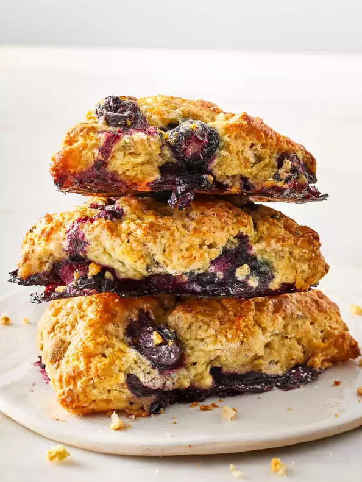

Air Fryer Mini Blueberry Scones

Description
Mini blueberry scones sprinkled with a sugary orange topping are easy to make in your air fryer
and will delight your brunch guests in just 30 minutes.
Ingredients
- 1 cup all purpose flour
- 4 tablespoons white sugar, divided
- 1½ teaspoons baking powder
- 1/8 teaspoon baking soda
- 1/8 teaspoon salt
- 2 tablespoons butter
- 1 egg
- 1/4 cup buttermilk
- 1/2 teaspoon vanilla extract
- 1/4 cup fresh blueberries
- 2 teaspoons orange zest
Steps
- Preheat the air fryer to 360 degrees F (180 degrees C).
- Stir together flour, 2 tablespoons sugar, baking powder, baking soda,
and salt in a medium bowl. Cut in butter with 2 knives or pastry blender
until mixture resembles coarse crumbs.
- Beat egg with a fork in a small bowl. Remove 2 tablespoons egg to another
small bowl; set aside. Add buttermilk and vanilla extract to remaining egg;
whisk with the fork until combined. Stir into flour mixture until just moistened.
Gently stir in blueberries.
- Transfer dough to a lightly floured surface. Gently knead until dough is no
longer sticky, about 8 to 10 strokes. Pat dough into a 6-inch circle. Cut into 8
wedges, without separating, dipping the knife in flour between cuts.
- Combine remaining 2 tablespoons sugar and orange zest in a small bowl. Brush top
of dough with reserved egg and sprinkle with sugar mixture. Separate dough wedges
and carefully arrange them, using a small wide spatula, in a single layer in the
fryer basket, in batches if necessary.
- Cook scones until golden brown, about 6 minutes. Serve warm.